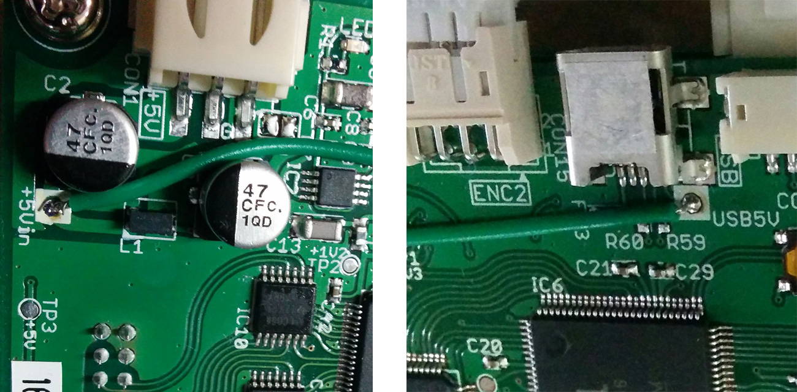

本セミナーの教材として使用するモータドライバは、初期状態ではセルフパワー(USBケーブルの他に、別途電源を供給する必要のある)USBデバイスとして動作します。本セミナーでは、簡易的な使用のため、モータドライバに配線を追加してバスパワーUSBデバイスとして使用します。
- 被覆電線を約80mmの長さで切断
- ワイヤストリッパを用い、電線の両端5mmの被覆を剥く
- モータドライバ上の「+5Vin」と「USB5V」の穴に電線を差し込み、半田付け 
- 半田付けがうまく行えているか確認 (オーガナイザーまたはTAに声をかけてください)
注意：「CON1」から5Vを供給して利用する場合には、ここで半田付けした電線を切除してください。そのままで「CON1」から5Vを供給すると、モータドライバおよびUSBで接続しているPCが破損する可能性があります。